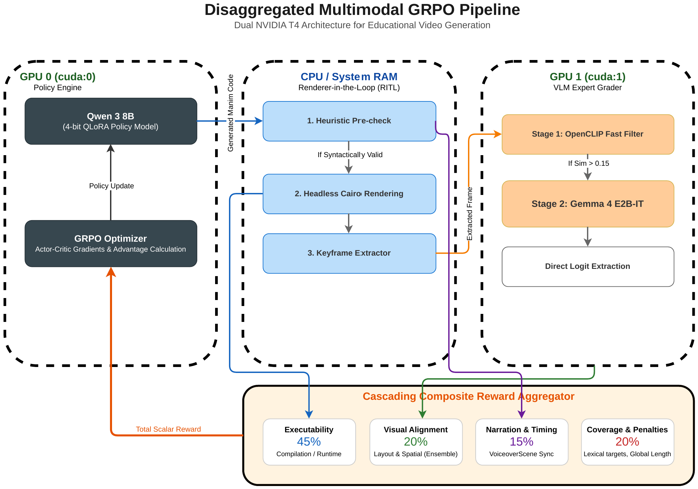
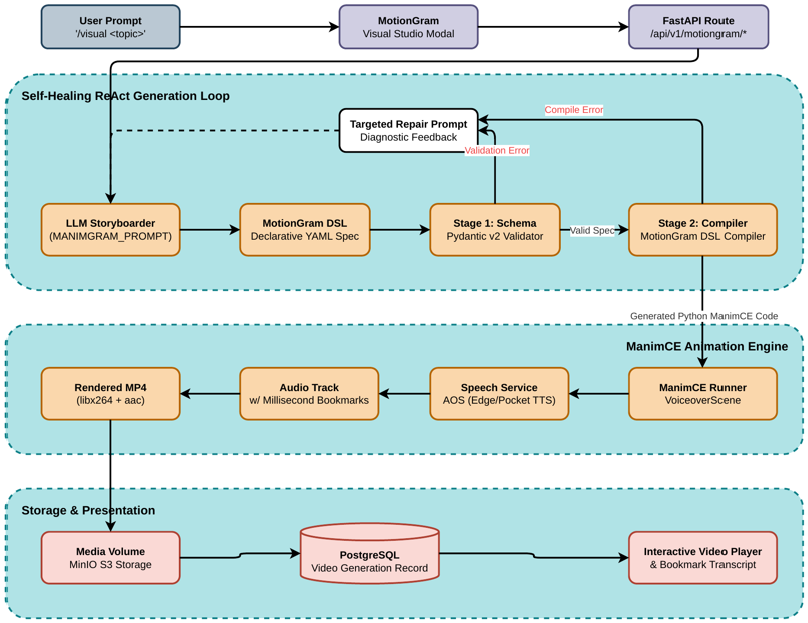
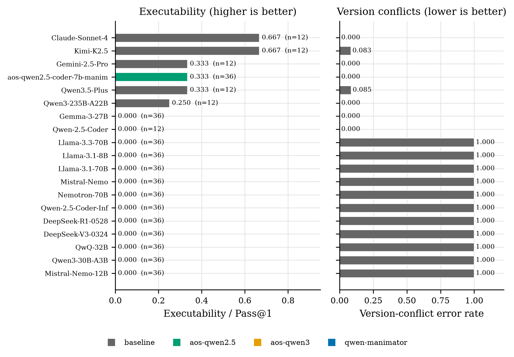
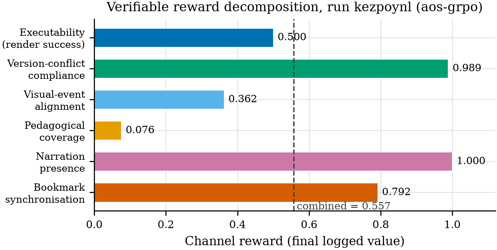

CMP6200 · Individual Honours Project
Verifiable Reward Modelling for Automated Manim Animation and Audio Synthesis
A renderer-grounded approach to checking whether generated educational animations run, teach the intended idea, and align with narration.
Explore the researchThe research
Make generated animation verifiable
Language models can produce Manim code that looks plausible but fails to run or drifts from the mathematical idea it should explain. This project studies a generation pipeline that checks animations against executable and pedagogical criteria, with rendered output as evidence.
The proposed reward is designed to be recomputable without a learned preference model. Its four weighted buckets are executability (45%), visual alignment (20%), narration and timing (15%), and pedagogical coverage with penalties (20%).
These figures describe the pilot reported in the project poster; they are not a claim of broad benchmark coverage.
How it works
Render, inspect, and repair
A generated scene moves through explicit checks. Compilation and rendering expose failures that source-code review alone can miss.


01
Plan lesson beats and visual claims.
02
Generate code and run static checks.
03
Render the scene and inspect its output.
04
Score, record, and repair bounded failures.
Pilot evaluation
What the poster reports
The results are early pilot measurements. The SFT comparison uses more trials than most listed baselines.
| Model | Exec. | VCER | Trials |
|---|---|---|---|
| Claude Sonnet 4 | 0.667 | 0.000 | 12 |
| Kimi-K2.5 | 0.667 | 0.083 | 12 |
| Qwen2.5-Coder-7B (SFT) | 0.333 | 0.000 | 36 |
| Gemini 2.5 Pro | 0.333 | 0.000 | 12 |
| Qwen3-235B-A22B | 0.250 | 0.000 | 12 |
Exec. is Pass@1 executability. VCER is version-conflict error rate. These values are copied from the poster’s comparison table.


Interpretation
Execution is only one part of quality
The poster reports that pedagogical coverage remains a constraint even when outputs satisfy compliance and narration checks. The 12-task pilot is small, and its base-model row is explicitly an estimate.
Generated examples
Short Manim lessons, with narration
Play any example with sound using the controls. Audio is included in each supplied MP4.
01
Logarithms
A compact narrated lesson using a worked power example.
02
Euler’s Formula
The identity is introduced as a formula slide with spoken explanation.
03
The Exponential Function
A text-first example introducing the function e to the x.
04
Exponentials
A short narrated introduction to exponential expressions.
Data and reproducibility
Artifacts for further study
The project poster describes a verified supervised fine-tuning corpus, a 200-brief GRPO prompt set, and a 12-task pilot benchmark. The linked datasets are hosted on Hugging Face.